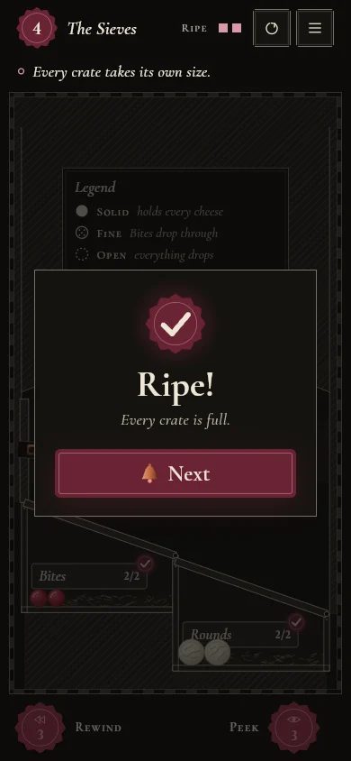
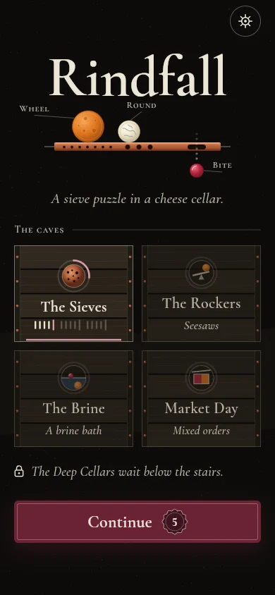
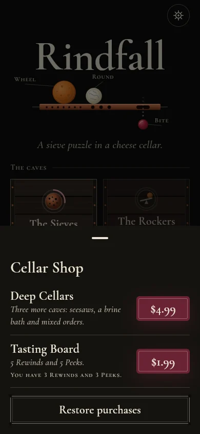

How it plays
- Slide a sieveDrag a copper plate, or tap a zone on its strip: solid, fine, coarse or open.
- Let them fallEach cheese drops only through holes it fits. Lids close on full crates and become ramps.
- Fill every crateEach crate takes its own size and count. Fill them all and the level is Ripe! A wrong size spoils it.
Four caves, sixty levels
- The SievesFine, coarse and open zones. Free.
- The RockersSeesaw flaps that only a Wheel tips open.
- The BrineA brine bath where Bites float and the rest sink.
- Market DayMixed orders: crates that take two sizes.
Every level is checked by a solver before it ships, so every cave can be cleared.
In the cellar



Fair by design
- No ads, no timers, no lives.
- Plays offline; nothing leaves your phone.
- Rewind takes back your last slide.
- Peek chalks the next right slide.
- Helpers are earned on levels 5, 10 and 15 of each cave.
- The first cave is free. Deep Cellars, a one-time purchase, opens the other three; the Tasting Board adds 5 Rewinds and 5 Peeks.